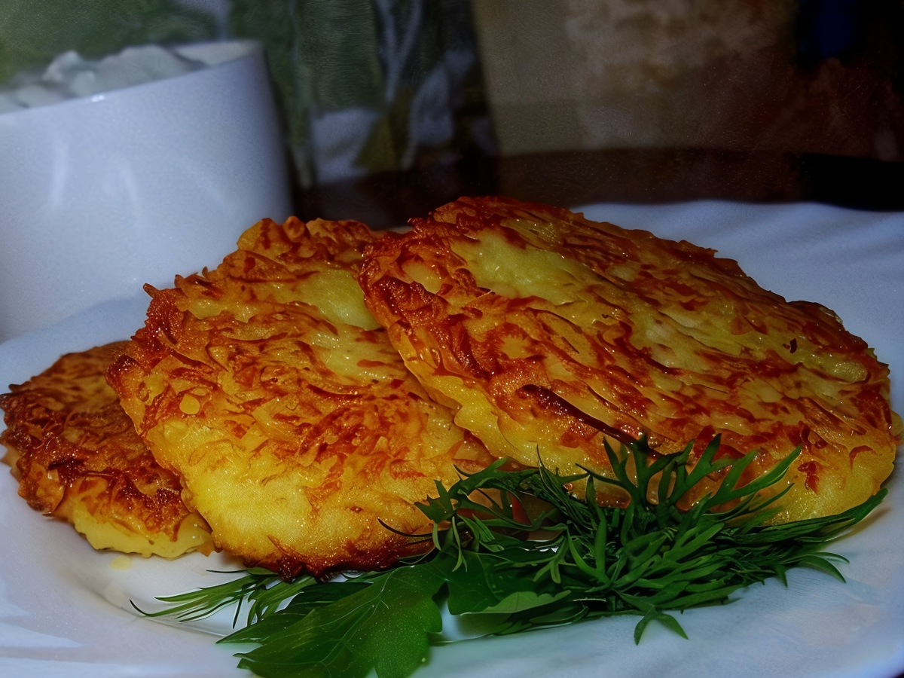

Draniki

Description
If you search the Web for “potato pancakes”, you will find that most nations have their versions of it –
such as Hash Browns in America or Latkes in Israel. Deeply rooted in Belarus nation-wide appreciation for
potatoes, it is a Slavic version of crispy, savory pancakes best enjoyed with a dollop of sour cream on top.
Belarus is known as the potato capital of the (former) USSR, so loving and knowing how to cook potato dishes
perfectly is a big part of their heritage.
Ingredients
- 1 Tb olive oil and butter, each
- 4 medium size Russet potatoes
- 1 egg
- 1 tsp salt
- greens (dill/green onions/cilantro)
- sour cream
Steps
-
Peel the potatoes and wipe with a wet paper towel.
-
Grate the potatoes using small or medium size blade. You have to do it quickly (but carefully,
watch out for your fingers) to avoid darkening of the potatoes. It will still discolor some, but
thats unavoidable.
-
Squeeze as much liquid out of potatoes as you can. Dont worry about making it too dry –
egg will bind it all together.
-
Add salt and egg. Mix well with a spatula.
-
Pre-heat the butter and olive oil over medium-medium high heat (I use 6 on my 2-10 knob marks)
in a pan big enough to fit all the pancakes arranged somewhat loosely.
-
Next, portion them out onto the pan, using a spoon or cookie scoop (once it feels hot enough) and
push the edges in to round it out. Flatten the top with the spatula as well. They should be about 1/4-1/3
inch thick.
- Let cook about 6 minutes per side. Depending on your stove and the pan you use , cooking time may vary.
Gently lift one on the side to check. It should look crisped, golden brown.
-
When done, carefully transfer them onto the plate and serve immediately, topped with sour cream and
greens. Enjoy!